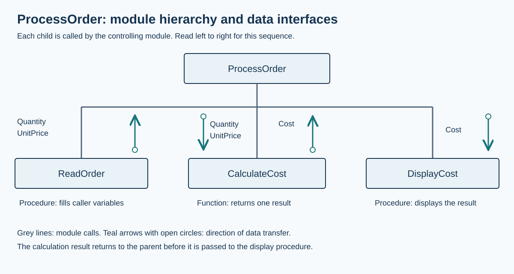

Decompose a problem into a structure chart
Visual overview
ProcessOrder: calls and data

Visual transcript
- The parent ProcessOrder calls three separate modules.
- ReadOrder supplies Quantity and UnitPrice by reference.
- CalculateCost returns Cost; the parent passes this result to DisplayCost.
Core explanation
Show which modules call which
A structure chart records the decomposition of a problem into modules. A rectangle names a module, and a connecting hierarchy line shows a calling relationship. Place the controlling module above the modules it calls, then refine a large subtask into another level when needed. The chart documents the overall design rather than every statement executed inside a module.
Apply the hierarchy to ProcessOrder
For one order, ProcessOrder obtains a positive integer Quantity and a non-negative real UnitPrice, calculates their product and displays the cost. The three child modules have distinct responsibilities. ReadOrder obtains the inputs, CalculateCost returns their product, and DisplayCost presents the supplied amount. For this example the parent calls them in that left-to-right sequence.